Panel work
Woodwork / installation / rolling ladder
Mega Book Case
A wall-sized bookcase, built in sections, fitted around a window, extended into a low console, filled with books, and then given a rolling ladder because apparently shelves can always become more unreasonable.
This one is less a single object and more a campaign: panel work, carcasses, wall fixing, alignment, shelf runs, drawers, cable-and-console details, ladder hardware, machining, welding, finishing, and many moments where the correct tool was patience.
Main build
From panels to a wall of shelves.
The early work is the quiet, repetitive part: cutting panels, making carcasses, keeping edges straight, and gradually turning flat sheet goods into something big enough to change the room.
Wall fitting
Laser lines and tall uprights.
Shelves
The moment it becomes a bookcase.
Console
The low cabinet under the wall of books.
Rolling ladder
The project inside the project.
The ladder turns the bookcase from storage into theatre. It also adds a whole mechanical sub-project: rollers, brackets, rails, fit, finish, and the excellent excuse to use the lathe for something that ends up in the living room.
Machining
Roller hardware on the lathe.
Welding
Ladder frame in the workshop.
Front face
Layout before commitment.
There is a lot of measuring before anything looks impressive. The front-face work is exactly that kind of careful, unglamorous progress: lay it out, check it, make the next operation less likely to embarrass you.
Scale
A room-sized tolerance stack.
A small cabinet can be a little forgiving. A full-height bookcase across a wall is less kind: every small error has somewhere to travel. The build is really about controlling that creep.
Integration
The window stayed in charge.
The bookcase has to frame the existing window, meet the room, leave the console useful, and make the steel-and-glass doors feel intentional rather than like neighbouring projects arguing.
Mechanics
Obviously it needed a ladder.
Once the shelves went high enough, the ladder became both practical and irresistible. A normal person might have bought one. This version acquired custom hardware, machining and welding.
Payoff
Furniture that changes the room.
The best bit is how the finished wall stops looking like furniture and starts acting like architecture. It makes the room taller, denser and more personal, which is a strong result for something that began as a large pile of boards.
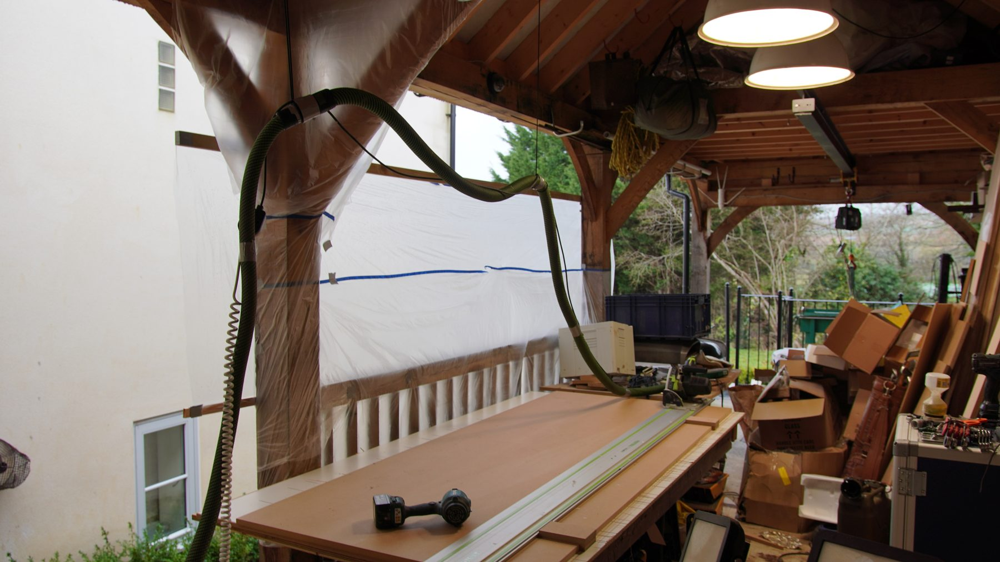
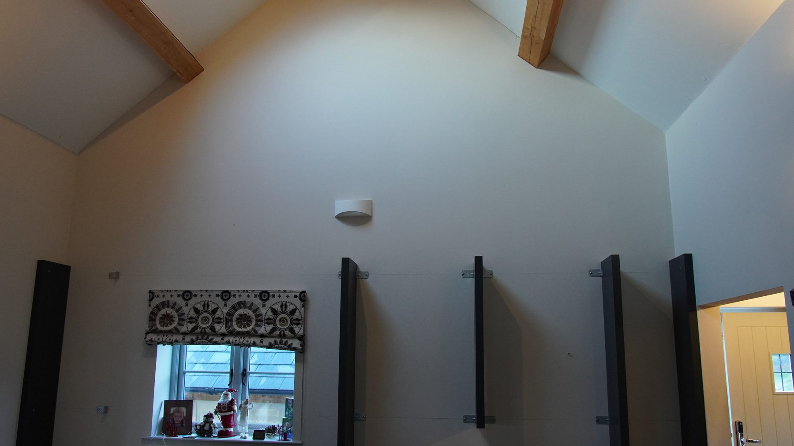
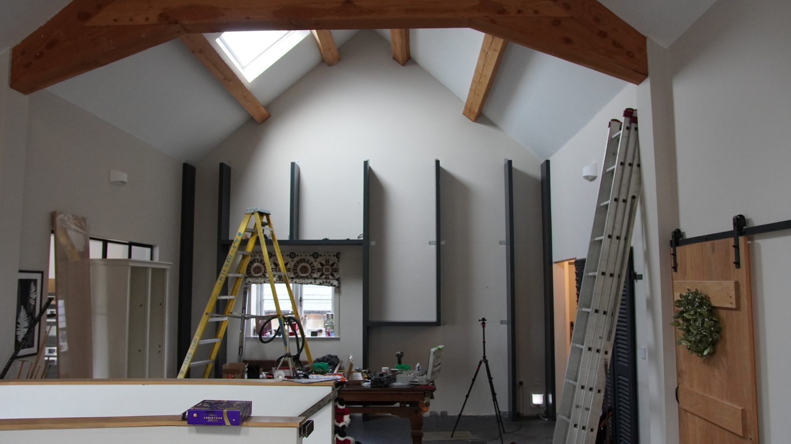
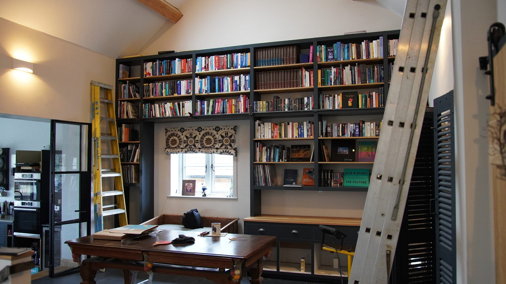
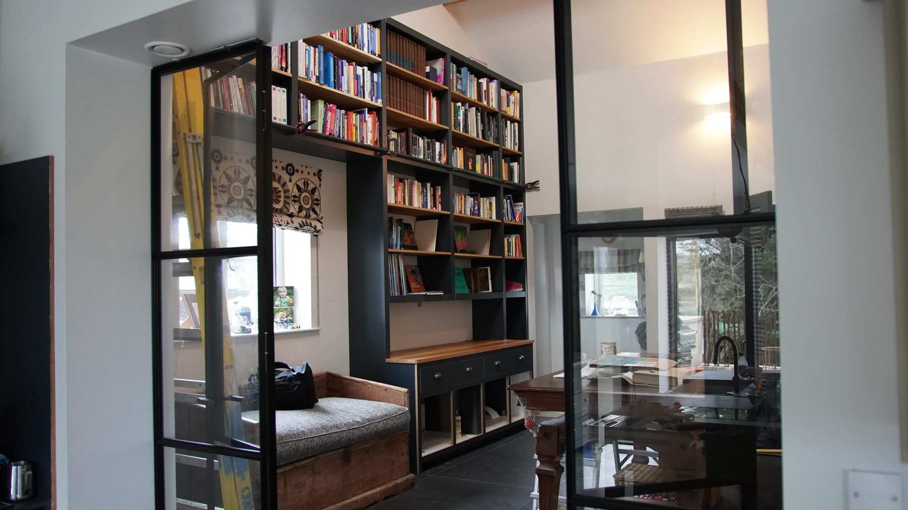
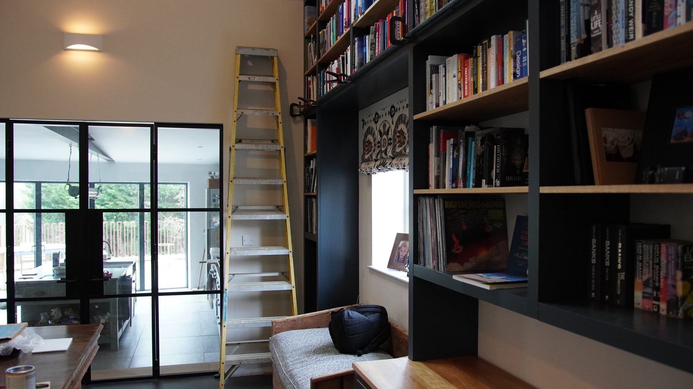
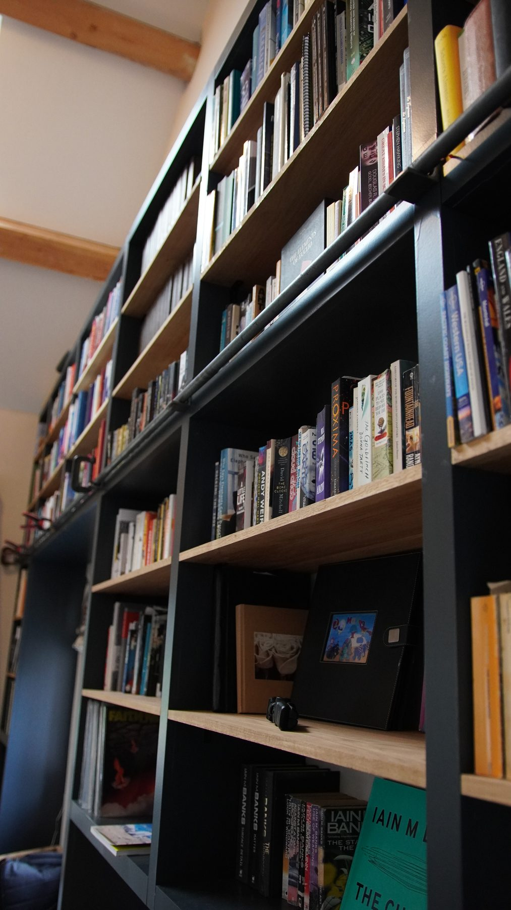
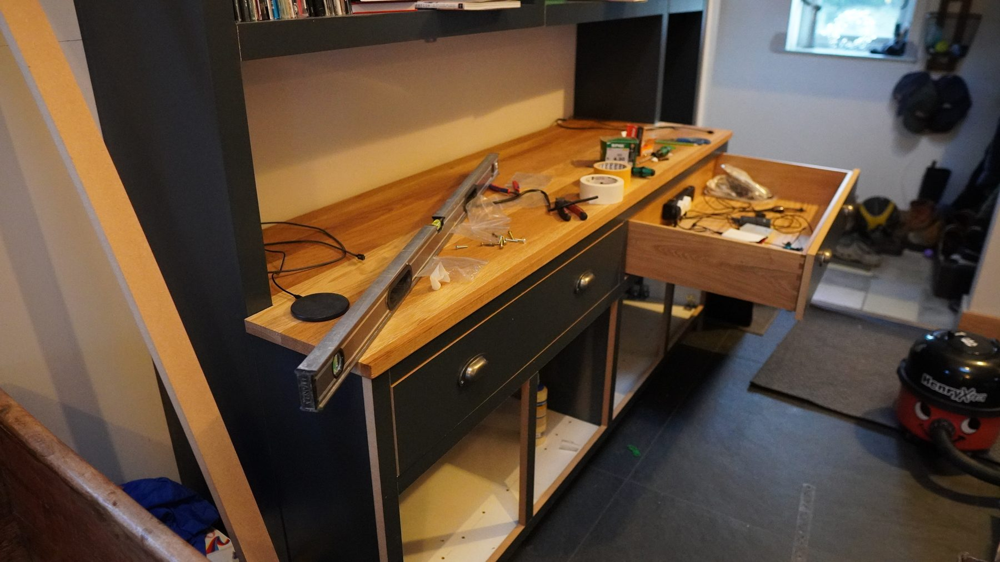
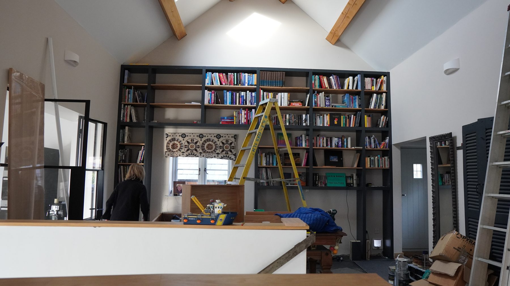
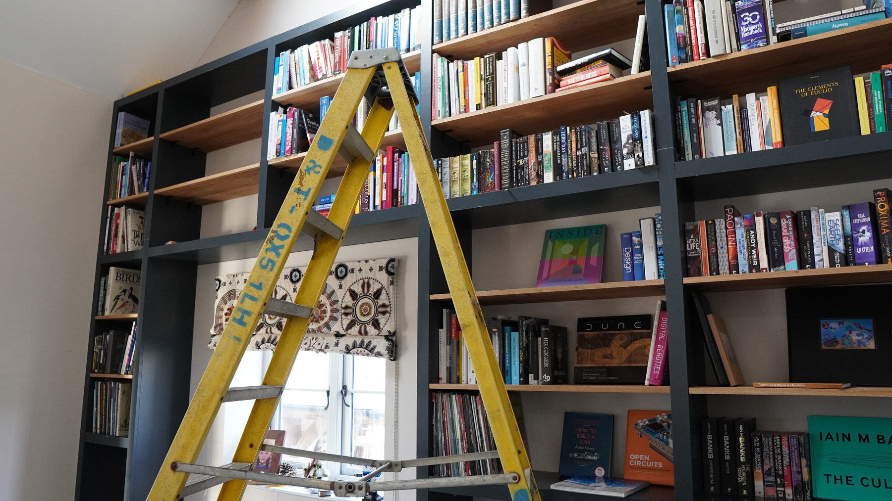
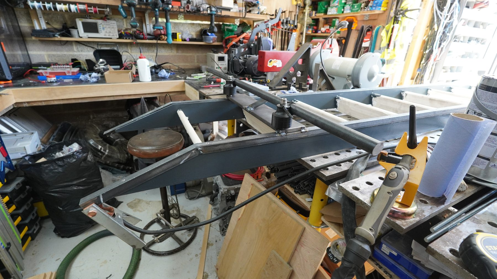